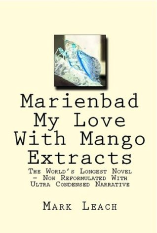

ITMD 362 Human-Computer Interaction and Web Design
Hello, My name is Anh Dang. I'm a second-year ITM major. Welcome to my random website.

Marienbad My Love - the longest book in the world with 70,710 pages
Top five longest books in the world:
- Marienbad My Love by Mark Leach - 17.8 million words
- The Blah Story by Nigel Tomm - 11 million words
- Artamène by Madeleine de Scudéry - 2.1 million words
- Les Hommes de Bonne Volonté by Jules Romains - 2.07 million words - 1.3 million words
- A La Recherche du Temps Perduby Marcel Proust
Source: Ten of the World's Longest Books
Here's a list of my favorite fruits:
- Apples
- Watermelons
- Peaches
- Tangerines